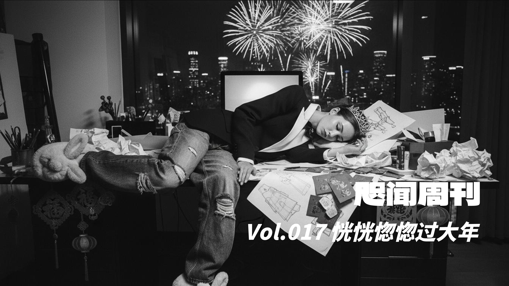
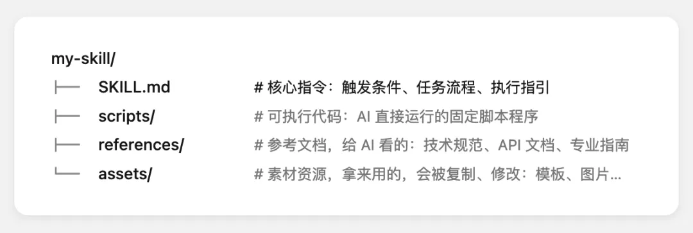
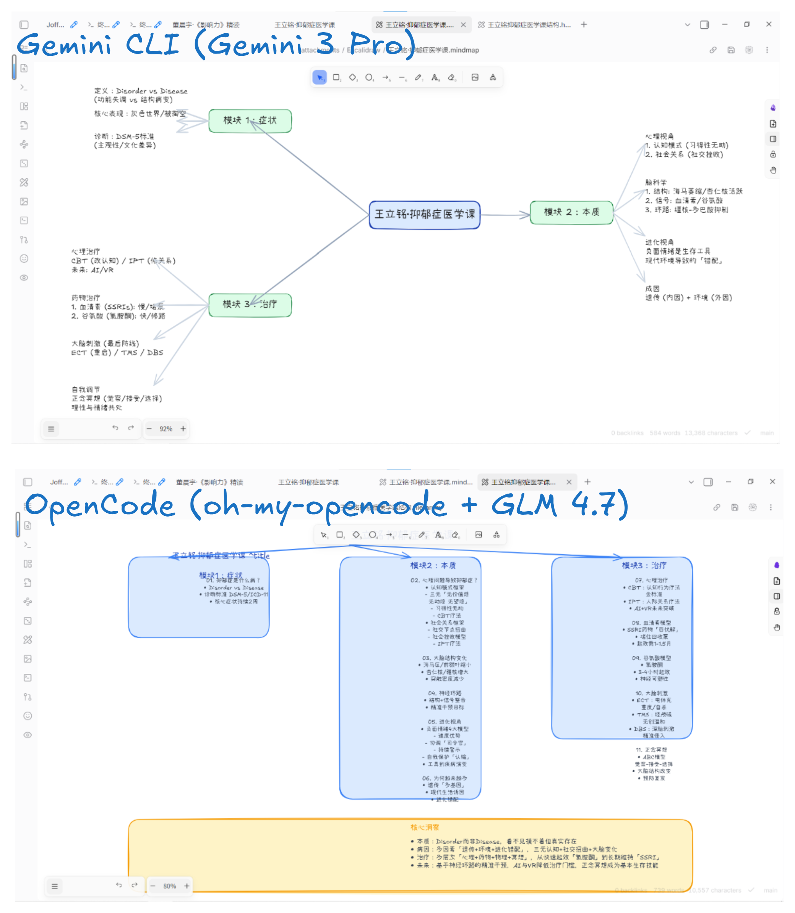
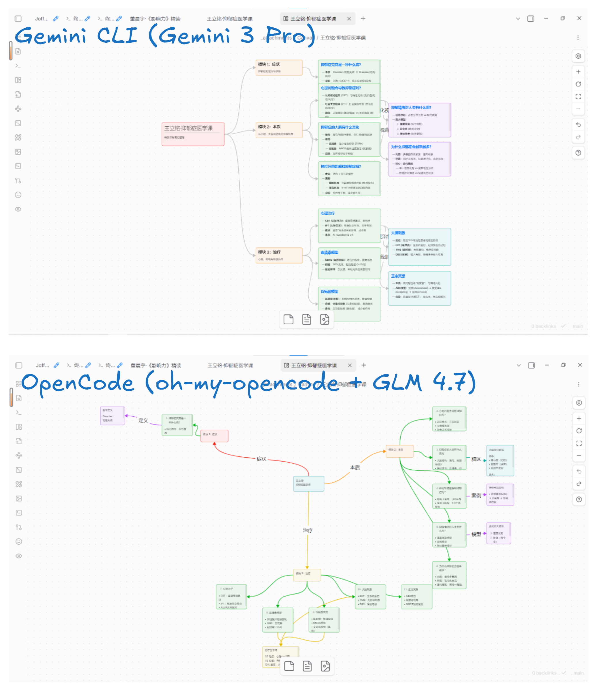
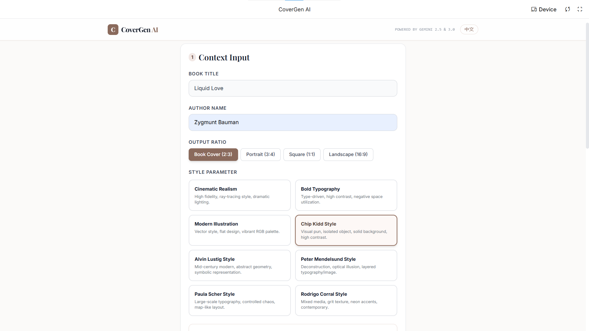
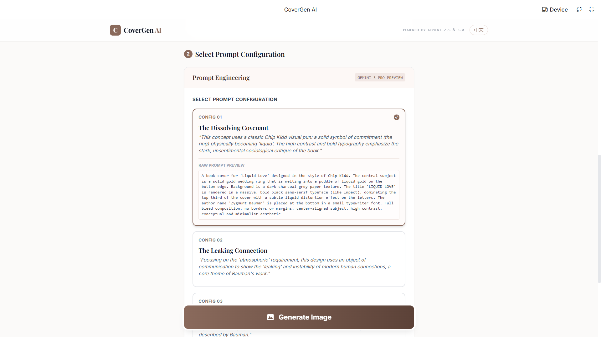
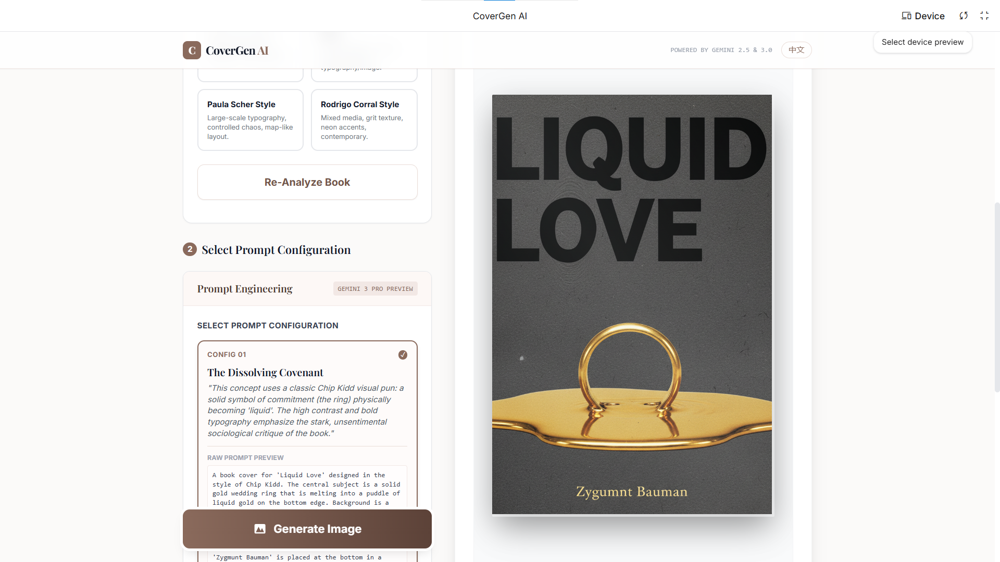
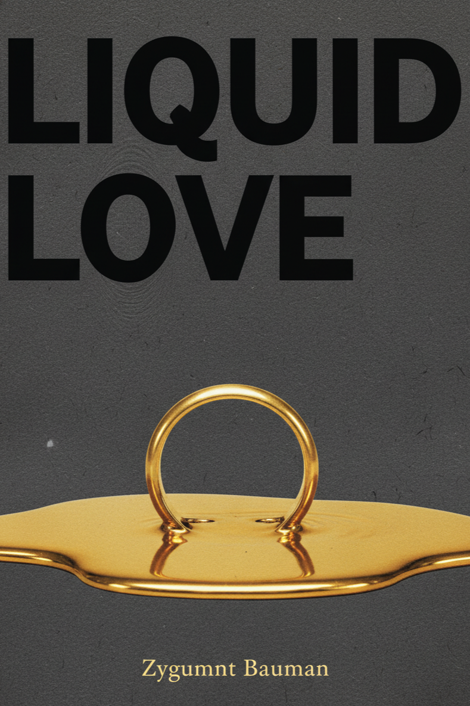
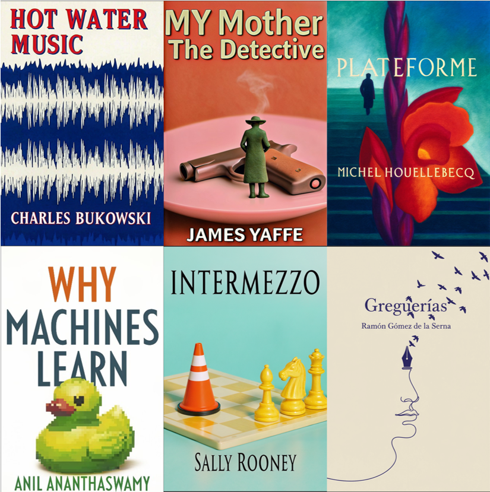

“我买的静音车厢。对，过山车。”
🐎 跑马场
🧧 节日
春节作为一家人团聚的时刻，具有超越性和公共性。它不仅仅是家庭成员的聚集，而且指向整个家族的延续。春节作为一种聚集与祭祀紧密相关。大家会去祭祖，全家人在一起分享食物、故事、辛酸和喜悦，这一切都在祖先之灵的照看下展开。因此，这里有真正的分享，它指向了神圣的连接。
——王小伟《日常的深处》
你我组成的伟大庆典，遍布天空。你我的歌声令天宇震颤，一切时代都在你我的嬉戏中消逝了。
——泰戈尔《吉檀迦利》
信是两次节日间的漫长等待，信是悦耳哨声中换气般的休止，信是理智的一次象征性晕眩。
——孙甘露《信使之函》
如今的节日仅仅是一次事件、一场热闹的活动。事件 (event) 来自拉丁语的 eventus，表示“突然出现、发生”。它的时间属性是偶发性。偶发性全然不同于神圣时间的必然性。前者正是当下社会的写照，一切约束和关联都消失了。
……如今，由于工作时间的绝对化，神圣时间已消失殆尽。即便是工作中的间歇时刻也是紧张的。休息的目的在于，使我们从疲劳中复原，以便我们继续正常工作。
——韩炳哲《倦怠社会》
🔥 欲望
按照科耶夫的说法，人类拥有欲望，而动物只有需求。 “需求”是指满足与特足对象之间关系的单纯渴望。例如，饥饿的动物只要吃了食物就能感到完全满足。匮乏—满足这种回路便是需求的特征，人类生活也大多是由这种需求所驱动的。不过，人类还有另一种渴望，那就是“欲望”。欲望与需求不同，即使得到了渴望的对象，匮乏得到填充，也不会消失。
——东浩纪《动物化的后现代》
多巴胺不是奖励的信号，而是强化的信号。为了让强化学习起作用，强化和奖励必须解耦。为了解决时间信用分配问题，大脑必须根据预测的未来奖励的变化来强化行为，而不是实际的奖励。
也就是说，大脑不是等到最后球进了才进行一次性的强化，而是利用多巴胺的RPE机制，在行为的每一步都评估“对未来奖励的预期是否有所提升”。
——麦克斯·班尼特《智能简史》
人类学女王米德夫人指出来，人类只会描绘地狱，而且非常会，有全部身体的感官记忆支援，地狱和人身紧紧相连，不同文化、国度、社群的地狱都是生动的、琳琅的、具体的，光只听或只看文字都让人如唤醒记忆也似的剧痛临身，因为身体是相同的、没空间时间隔阂的；而天堂的描述则几无例外是空洞的、虚浮的，天堂的共同点是没事，没人有事可做，一如我们不知道进一步快乐，更快乐，在苦痛消失后仍一直持续驻留地快乐个不停，是什么的景况以及如何可能。
——唐诺《求剑》
逐渐地，人只剩下他自己，人进入到人类历史上未曾有过的最孤独处境。但这里，我们要说的还不是“无助”，而是“无事”。如今个人主义（带点误解误用的）已彻底到、真实到很难真的有事发生如坟场，好像说，一整个世界的偌大空间里只剩下你自己一颗粒子，产生不了碰撞，没有触发和启示，也没有其他的发动；人只能用自己一个人的经历和视角面对世界，空悠悠的，而这种“只发生一次”、无人可比对可证实的经历（只经不验，经历不成其为经验了），如风吹过如水流过，稍后就变得透明、极不真实，只依稀仿佛像做了个梦，也跟做梦醒来很快就忘了、散掉了一样——彻底的一人独处最终连记忆都极不容易留住，会是一种失忆的、失声的、梦境化的无事。
——唐诺《求剑》
⏳ 年纪
重新阅读桑塔格这本日记中被画线的段落，在若干年后再次感受其文字的力量，在某些句子，尤其是关于婚姻冥想的句子下重新画线：此时，我发现自己正阅读的所有内容，竟写于 1957 或 1958 年。我掰着指头算了算。桑塔格当时只有二十四岁，比我现在还小九岁。我突然感到十分尴尬，感觉就像是笑话没等包袱抖出来但我先笑了出来，或是听音乐会时在乐章间鼓掌。
——瓦莱里娅·路易塞利《失踪孩子档案》
我十几年前编了套给高中学生看的“人类最伟大的声音”的小册子模样丛书，其中一本是《共产党宣言》，当时我在书前的介绍文字已打预防针似的指出来，请务必注意写此宣言时马克思才三十一岁、恩格斯二十九岁，恰恰好就是我儿子现在的年纪，所以说，在赞叹不已之余，我们要不要就此相信这是一份先知的文件，是一则穿透了总结了人类全部所知所能、再不留一丝历史奥秘阴影、揭示人类全体无可遁逃命运、而且一字一句都不容改动不许怀疑也就不用多想的最后神谕？还是说，这毋宁更像写一首诗呢？带着年轻人的满满激情、以及年轻时日很难避免的虚张声势和巴洛克风？
——唐诺《求剑》
我以为这会生出某种理解和宽容（宽容最好不要只是命令，宽容要留住、要成为人自身的一部分，需要真的有所理解来支援它），人的困难和其折腾其实很容易忘，一如生理性的痛觉一消失就变得很不真实。我尽可能记得它们，包括各种笨法的昔日年轻自己，来路蓝缕，也许这样我在读一本一本各种年龄书写者（比方太宰治）的作品时可以更当真、更耐心、更如身历其境。
——唐诺《求剑》
更多时候，阅读止于书写者较惊动世界（大声讲话）、也较虚张声势的那部作品，但往往也是他尚未抵达自己书写巅峰时日的作品。像托尔斯泰，当然是《战争与和平》而不是更好的、好得如此明显的《安娜·卡列尼娜》，同理，昆德拉止于《不能承受的生命之轻》、卡尔维诺止于《看不见的城市》、福楼拜止于《包法利夫人》云云。诗人艾略特则好像年轻时一鸣惊人写了《荒原》就心满意足停笔了甚至天妒英才死掉了；至于海明威的《丧钟为谁而鸣》和马克·吐温的《汤姆·索亚历险记》则几乎就是他们各自最差的那本书，还好如今《老人与海》逐渐取代了《丧钟为谁而鸣》，只是我合理地怀疑这仅仅是《老人与海》比较薄的缘故。严肃正统的学院世界稍微好一些，不至于真不知道《安娜·卡列尼娜》是更高出一截的作品，但也仅止于稍微好一点复杂一点而已，接近于把书写者的存在多延长个五年十年左右。
——唐诺《求剑》
🛠️ 操作台
🤖 Obsidian + Gemini CLI
我居然是去年 7 月份开始用 Gemini CLI，也是在那时就与 Obsidian 笔记库连用了（Vol.009 刺杀了将军的形象）。一般会配合插件 Terminal 使用——这个插件并不关键，只是方便我快一步在当前目录打开命令行。
新版的 Gemini CLI 终于开始支持 Skill。
Skill 相当于把各种指令“原子化”了，并且在提示词文件开头写了“摘要”。比起之前的 GEMINI.md 提示词，Agent 可以根据任务自主选择工作流，先浏览再细读，这一机制被称为“渐进式披露”。
除了指令之外，Skill 还可以包括代码之类的资源文件，比如之前的 OCR 和翻译工作流都可以写成 Skill——事实上，我尝试写了 OCR PDF 文件的 Skill，但因为 Gemini CLI 限制了上下文窗口，导致切分后的 PDF 都无法读取，只好作罢。至于翻译工作流，既然已经彻底程序化（Vol.015 个人的体验），也就不必写成 Skill 引入“不稳定因素”了。

既然是用 Agent 工具控制 Obsidian，有一些现成的 Skills 可以直接拿来使用，比如 obsidian-skills 和 axton-obsidian-visual-skills。后者是可视化相关的 Skills 合集，可以绘制 Excalidraw、Canvas 和 Mermaid。
对比一下 Gemini CLI（使用模型为 Gemini 3.0 Pro）和 OpenCode（安装 oh-my-opencode 插件，使用模型为 GLM 4.7）使用同样 Skill 的效果。
这是 Excalidraw：

这是 Canvas：

可以看出，生成 Excalidraw 要更难一些，但因为模型能力强，Gemini CLI 的完成效果还是不错的。
🎨 封面设计（续）
上次写“封面设计”已经是将近一年以前（Vol.006 AI Did IT 封面设计），看了奇普·基德的设计建议后，用 Recraft 生图（转绘）完成。
刚刚我福至心灵，用 Google AI Studio 写了一个自动化执行的版本—— CoverGen AI，接下来让我们连线一线工作人员，让 TA 讲解一下具体的实现流程：
参数输入
用户在前端输入书名、作者名，并从预设列表中选择一种视觉风格（如“电影感写实”或“极简大字排版”）以及目标宽高比（如 2:3 书封标准）。搜索与推理 (Gemini 3.0 Pro)
应用调用gemini-3-flash-preview模型，利用 Google Search 工具联网搜索该书籍的剧情、背景及核心元素。模型并非直接生图，而是根据搜索结果和用户选定的风格，生成 3 组差异化的英文生图提示词（分别侧重：关键物体隐喻、场景氛围、人物/情绪），并以 JSON 格式返回。人工决策与修正
前端解析 JSON 数据，向用户展示这 3 组方案的设计思路（中文）和原始提示词（英文）。用户点击选择其中一组，或在此基础上进行手动修改，确认最终用于生图的指令。图像生成 (Gemini 2.5 Flash)
应用调用gemini-2.5-flash-image模型。- 比例映射逻辑：由于模型原生不支持 2:3 比例，如果用户选择了 2:3，代码会自动将其转换为 API 支持的 3:4 比例进行请求，并并在提示词中加入“全出血（Full Bleed）、无边框”的构图指令，确保主体位于中心安全区。
客户端后处理
浏览器接收模型生成的 Base64 图像数据。- 自动裁切逻辑：如果目标比例是 2:3，前端会使用 HTML5 Canvas 对返回的 3:4 图像进行计算，切除左右边缘多余像素，将其无损转换为严格的 2:3 比例；其他比例（如 1:1）则直接输出原图。
作为用户，第一步是输入书名和作者名，因为调用 gemini-2.5-flash-image 模型生图，所以还是只能生成英文的封面。此外，有两个选项，一是封面的尺寸，二是设计风格。

之后，AI 将提供三个版本的设计方案供你选择，如果都不满意，也可以写自己的提示词：

最后点一下，静待出图：

这是成品：

以下是之前生成的封面中几个比较满意、且没有发布过的，这几张并没有使用新做的一站式应用：
